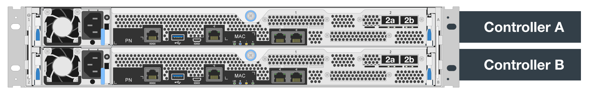

请求文档变更
请求文档变更 在 GitHub 上编辑
在 GitHub 上编辑 提供者指南
提供者指南软件配置
提供者
NetApp上的BeeGFS软件配置包括BeeGFS网络组件、EF600块节点、BeeGFS文件节点、资源组和BeeGFS服务。
BeeGFS网络配置
BeeGFS网络配置由以下组件组成。
-
*浮动IP*浮动IP是一种虚拟IP地址、可以动态路由到同一网络中的任何服务器。多个服务器可以拥有相同的浮动IP地址、但在任何给定时间、它只能在一个服务器上处于活动状态。
每个BeeGFS服务器服务都有自己的IP地址、可以根据BeeGFS服务器服务的运行位置在文件节点之间移动。此浮动IP配置允许每个服务单独故障转移到另一个文件节点。客户端只需知道特定BeeGFS服务的IP地址即可；它不需要知道哪个文件节点当前正在运行该服务。
-
* BeeGFS服务器多主机配置*为了提高解决方案 的密度、每个文件节点都有多个存储接口、其IP配置在同一IP子网中。
为了确保此配置在Linux网络堆栈中正常运行、需要进行其他配置、因为默认情况下、如果一个接口的IP位于同一子网中、则可以在其他接口上对对对对请求做出响应。除了其他缺点之外、此默认行为还会使您无法正确建立或维护RDMA连接。
基于Ansible的部署可处理反向路径(RP)和地址解析协议(ARP)行为的收紧、并确保浮动IP何时启动和停止；系统会动态创建相应的IP路由和规则、以使多宿主网络配置正常运行。
-
* BeeGFS客户端多导轨配置*_Multi-raid_是指应用程序能够使用多个独立的网络"导轨"来提高性能。
虽然BeeGFS可以使用RDMA进行连接、但BeeGFS使用IPoIB简化发现和建立RDMA连接的过程。要允许BeeGFS客户端使用多个InfiniBand接口、您可以为每个客户端配置位于不同子网中的IP地址、然后为每个子网中一半的BeeGFS服务器服务配置首选接口。
在下图中、以淡绿色突出显示的接口位于一个IP子网中(例如、
100.127.0.0/16)、而深绿色接口位于另一个子网中(例如、100.128.0.0/16)。下图显示了在多个BeeGFS客户端接口之间平衡流量的情况。

由于BeeGFS中的每个文件通常在多个存储服务之间进行条带化、因此多导轨配置可以使客户端实现比单个InfiniBand端口更大的吞吐量。例如、以下代码示例显示了一个通用文件条带化配置、该配置允许客户端在两个接口之间平衡流量：
root@ictad21h01:/mnt/beegfs# beegfs-ctl --getentryinfo myfile Entry type: file EntryID: 11D-624759A9-65 Metadata node: meta_01_tgt_0101 [ID: 101] Stripe pattern details: + Type: RAID0 + Chunksize: 1M + Number of storage targets: desired: 4; actual: 4 + Storage targets: + 101 @ stor_01_tgt_0101 [ID: 101] + 102 @ stor_01_tgt_0101 [ID: 101] + 201 @ stor_02_tgt_0201 [ID: 201] + 202 @ stor_02_tgt_0201 [ID: 201]
使用两个IPoIB子网是一个逻辑上的区别。如果需要、您可以使用一个物理InfiniBand子网(存储网络)。

BeeGFS 7.3.0增加了多轨支持、允许在一个IPoIB子网中使用多个IB接口。NetApp解决方案 上的BeeGFS设计是在BeeGFS 7.3.0全面推出之前开发的、因此展示了如何使用两个IP子网在BeeGFS客户端上使用两个IB接口。多IP子网方法的一个优势是无需在BeeGFS客户端节点上配置多主节点(有关详细信息、请参见 "BeeGFS RDMA支持"）。
EF600块节点配置
块节点由两个主动/主动RAID控制器组成、这些控制器可共享访问同一组驱动器。通常、每个控制器拥有系统上配置的一半卷、但可以根据需要接管另一个控制器。
文件节点上的多路径软件可确定每个卷的活动和优化路径、并在发生缆线、适配器或控制器故障时自动移至备用路径。
下图显示了EF600块节点中的控制器布局。

为了便于使用共享磁盘HA解决方案 、卷会映射到两个文件节点、以便它们可以根据需要相互接管。下图显示了如何配置BeeGFS服务和首选卷所有权以实现最高性能的示例。每个BeeGFS服务左侧的接口指示客户端和其他服务用来与其联系的首选接口。

在上一示例中、客户端和服务器服务更愿意使用接口i1b与存储服务1进行通信。存储服务1使用接口i1a作为与其第一个块节点的控制器A上的卷(storage_tgt_101、102)进行通信的首选路径。此配置可利用InfiniBand适配器可用的全双向PCIe带宽、并通过双端口HDR InfiniBand适配器获得比PCIe 4.0更高的性能。
BeeGFS文件节点配置
BeeGFS文件节点配置到高可用性(HA)集群中、以便于在多个文件节点之间对BeeGFS服务进行故障转移。
HA集群设计基于两个广泛使用的Linux HA项目：用于集群成员资格的corosync和用于集群资源管理的Pacemaker。有关详细信息，请参见 "针对高可用性附加组件的Red Hat培训"。
NetApp编写并扩展了多个开放式集群框架(Open Cluster Framework、OCF)资源代理、使集群能够智能启动和监控BeeGFS资源。
BeeGFS HA集群
通常、在启动BeeGFS服务(无论是否具有HA)时、必须具备一些资源：
-
可访问服务的IP地址、通常由Network Manager配置。
-
用作BeeGFS数据存储目标的底层文件系统。
这些参数通常在`/etc/fstab`中定义、并由systemd挂载。
-
一种系统服务、负责在其他资源准备就绪时启动BeeGFS进程。
如果没有其他软件、这些资源只会在一个文件节点上启动。因此、如果文件节点脱机、则无法访问BeeGFS文件系统的一部分。
由于多个节点可以启动每个BeeGFS服务、因此Pacemaker必须确保每个服务和相关资源一次仅在一个节点上运行。例如、如果两个节点尝试启动同一BeeGFS服务、则在它们都尝试写入底层目标上的相同文件时、存在数据损坏的风险。为了避免这种情况、Pacemaker会依靠Corosync可靠地在所有节点之间保持整个集群的状态同步并建立仲裁。
如果集群发生故障、Pacemaker会做出反应、并在另一节点上重新启动BeeGFS资源。在某些情况下、Pacemaker可能无法与原始故障节点通信以确认资源已停止。要在其他位置重新启动BeeGFS资源之前验证节点是否已关闭、Pacemaker最好断开故障节点的电源。
有许多开源隔离代理可用于使Pacemaker使用配电单元(PDU)或使用服务器基板管理控制器(BMC)和Redfo*等API来隔离节点。
当BeeGFS在HA集群中运行时、所有BeeGFS服务和底层资源都由资源组中的Pacemaker管理。每个BeeGFS服务及其所依赖的资源都会配置到一个资源组中、以确保资源按正确顺序启动和停止、并放置在同一节点上。
对于每个BeeGFS资源组、Pacemaker都会运行一个自定义BeeGFS监控资源、该资源负责检测故障情况、并在特定节点上无法再访问BeeGFS服务时智能地触发故障转移。
下图显示了由Pacemaker控制的BeeGFS服务和依赖项。

|
|
为了在同一节点上启动多个相同类型的BeeGFS服务、我们将Pacemaker配置为使用多模式配置方法启动BeeGFS服务。有关详细信息，请参见 "有关多模式的BeeGFS文档"。 |
由于BeeGFS服务必须能够在多个节点上启动、因此每个服务(通常位于`/etc/beegfs`)的配置文件存储在用作该服务的BeeGFS目标的E系列卷之一上。这样、可能需要运行此服务的所有节点都可以访问此配置以及特定BeeGFS服务的数据。
# tree stor_01_tgt_0101/ -L 2
stor_01_tgt_0101/
├── data
│ ├── benchmark
│ ├── buddymir
│ ├── chunks
│ ├── format.conf
│ ├── lock.pid
│ ├── nodeID
│ ├── nodeNumID
│ ├── originalNodeID
│ ├── targetID
│ └── targetNumID
└── storage_config
├── beegfs-storage.conf
├── connInterfacesFile.conf
└── connNetFilterFile.conf